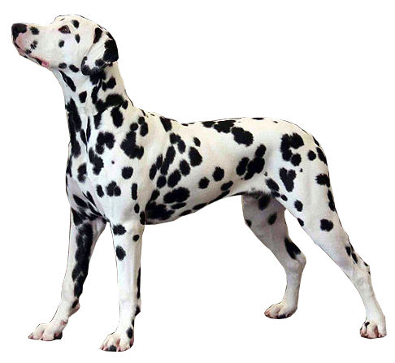

El dálmata es una raza de perro que debe su nombre a la histórica región de Dalmacia, en la costa oriental del mar Adriático. Su característica principal es su singular pelaje moteado de color negro, hígado o limón.
Está clasificada como la raza número 153, sección 3 del grupo 6 de la Federación Cinológica Internacional.Al nacer, las crías carecen de manchas, las cuales van apareciendo por todo su cuerpo durante el primer año de vida.Acompañaba a los carruajes de caballos sirviendo como perro vigilante, por lo que es el perro tradicional de los bomberos y los establos.
También se ha empleado como pastor y en ocupaciones relacionadas con las guerras. En el Reino Unido, durante el Período Regencia (1811-1820) se utilizó para hacer compañía a los carruajes de la aristocracia, ya que era un símbolo de estatus para la nobleza que un perro de este tipo corriera junto a los caballos que tiraban de su carruaje. A partir de la película 101 dálmatas de Disney, estrenada en 1961, su popularidad se incrementó.
